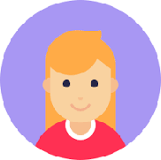
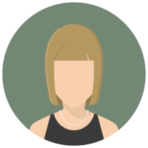

| Quem somos
Sobre
A12e, projeto que idealizamos inclui ferramentas para registro e organização das interações e produção de forma colaborativa, e através da proposta aqui descrita pelo grupo, incorporará ferramentas semânticas para apoio automático à colaboração no escopo da web, (semântico-social, tema convergente e catalisador) para a pesquisa na área. As interações do A12e serão modeladas através da extensão de uma plataforma para representação do conhecimento que proverá uma camada de inteligência possibilitando a integração de serviços como os providos por agentes de recomendação de conteúdos e de interfaces adaptativas.
Nossas principais atividades incluem:
- Desenvolvimento de metodologias para a implementação de soluções acessíveis para pessoas com deficiência;
- Criação de sites, portais e sistemas web acessíveis;
- Realização de avaliação de acessibilidade virtual;
- Construção de materiais didático-pedagógicos acessíveis/adaptados;
- Promoção de cursos, capacitações, palestras e oficinas;
- Produção de Tecnologia Assistiva de baixo custo.
Equipe
-

Alex Oliveira
alex@midiativos.com Graduado em redes de computadore
Pós-graduado redes telecomunicações -

Bárbara Félix
barbara@midiativos.com Bacharel em Design de Moda pela FAC-UFC
Cursos complementares de Alta Costura (Centro Superior de Moda de Madrid)
Desenho com enfoque na figura humana
Formação em fotografia e trabalha com cinema -
Emillie Dias
emillie@midiativos.com Formada em sistemas de informação - UEG
-
Enivaldo Junior
enivaldo@midiativos.com Licenciado em Biologia
-

Fernando Finotti
fernando@midiativos.com Licenciatura em Computação e Análises de Sistemas
Pós em Engenharia de Software -
Jade Cauia
jade@midiativos.com Licenciatura Computação pela UEG
Pós em Neuropedagogia - Instituto Consciencia GO
Técnico em açucar e alcool - IFG
Graduanda em biologia - UFG
Graduanda de pós em Processos e Produtos Criativos - UFG
Empresária: personalização para eventos e casamentos -
Kalyne Menezes
kalyne@midiativos.com Jornalista, blogueira, consultora e pesquisadora
Com especialização em Assessoria em Comunicação e Marketing
Mestrado em comunicação
-
Kleber Martins
kleber@midiativos.com Bacharel em Sistemas de Informação na UniEvangélica
Estudando Full Stack WebDevelopment Certification -
Maxwell Castro
maxwell@midiativos.com Cirurgião-dentista inquieto por midias
Curioso na area de criação -
Paulo Afonso
paulo@midiativos.com Graduado em Jornalismo
Mmestrando em Ciências da Religião na PUC GOIÁS
Pesquisando Mídia e Religião
Graduando Filosofia no Instituto de Filosofia e Teologia de Goiás (IFITEG) -

Raylla Hariel
raylla@midiativos.com Bacharel em Arquitetura e Urbanismo
Cursando Design Gráfico
Pós-graduanda em Docência Universitária. -
Renata Tavares
renata@midiativos.com Bacharel em Fonoaudiologia
Licenciada em Letras/Português
Especialista em Atendimento Educacional Especializado pela UNESP
MBA em Gestão de Pessoas pela FGV e mestra em Educação -
Weder Sousa
weder@midiativos.com Pós Graduado em Segurança da Informação, pela AVM (DF)
Graduado em Ciência da Computação (Anhanguera Educacional)
Técnico em Habilitação em Desenvolvimento de Sistemas (ITEGO/CEPA)
Estudando Full Stack WebDevelopment Certification